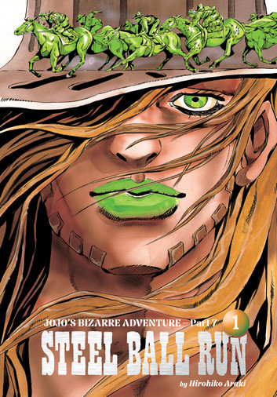
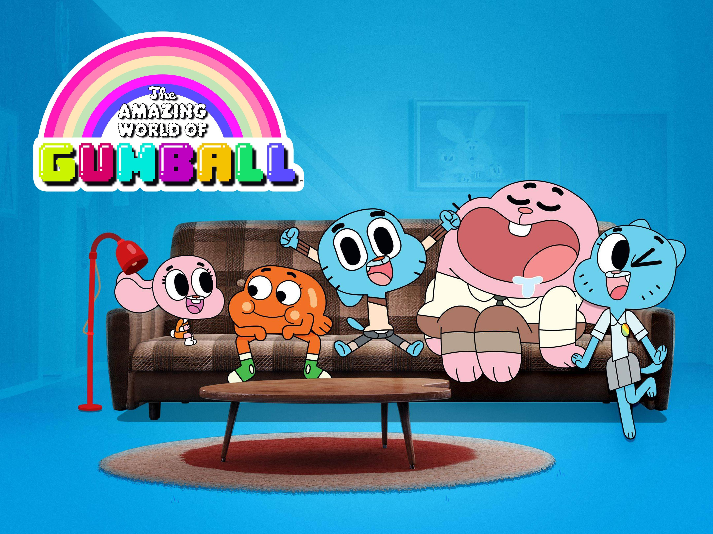
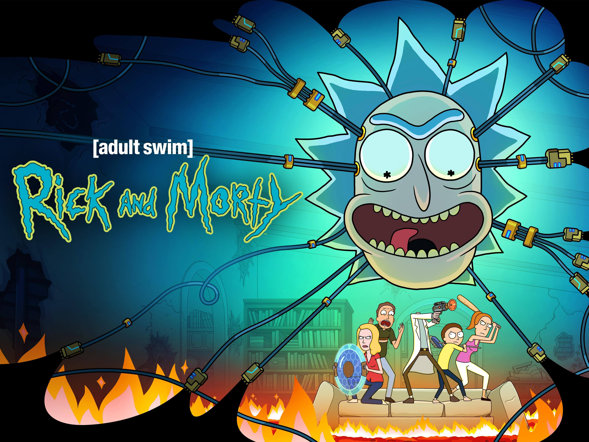
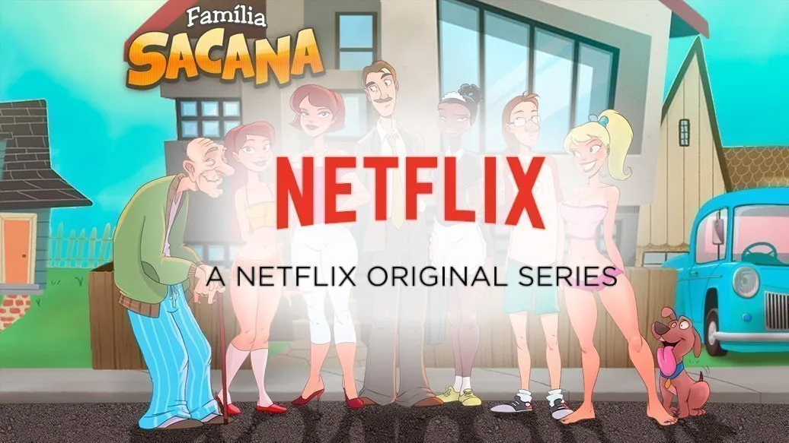

JoJo's Bizarre Adventure é uma série de mangá escrita e ilustrada por Hirohiko Araki. A história segue as aventuras da família Joestar, cujos membros descobrem que possuem habilidades sobrenaturais e se envolvem em batalhas contra forças malignas ao longo das gerações.

O incrível mundo de Gumball é uma série de animação americana criada por Carbotron. A história segue as aventuras de Gumball, um gato de quatro patas que vive em uma cidade fictícia e enfrenta situações hilárias e inesperadas com sua família e amigos.

Rick and Morty é uma série de animação americana criada por Justin Roiland e Dan Harmon. A história segue as aventuras de Rick, um cientista excêntrico, e seu neto Morty, enquanto eles viajam por diferentes dimensões e enfrentam situações absurdas e perigosas.

Familia sacana é uma série de animação americana criada por Justin Roiland e Dan Harmon. A história segue as aventuras da família Sanches, conhecida por sua natureza excêntrica e situações hilárias.